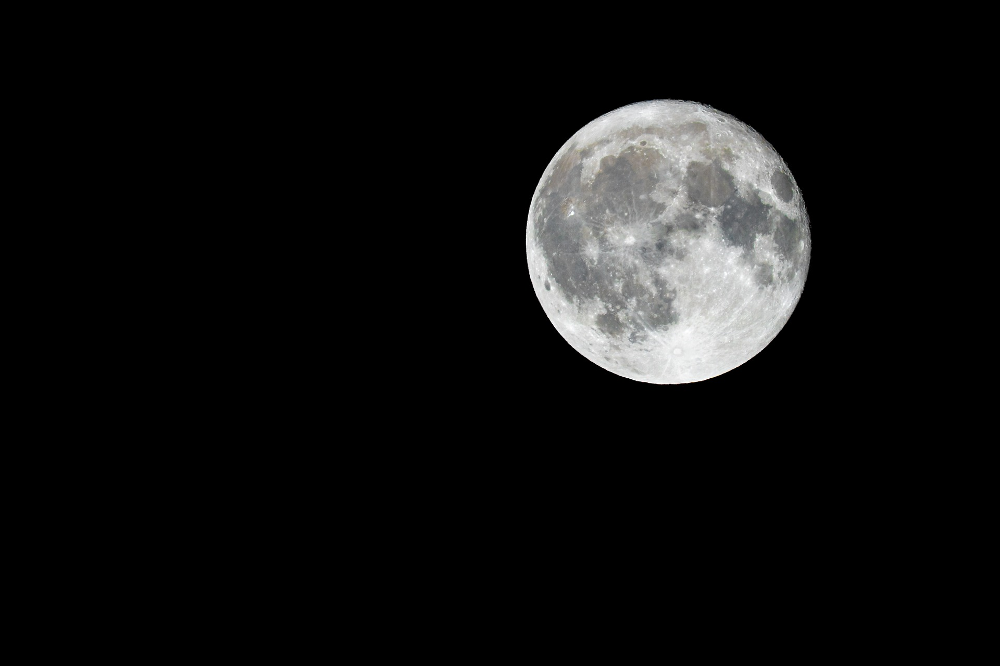
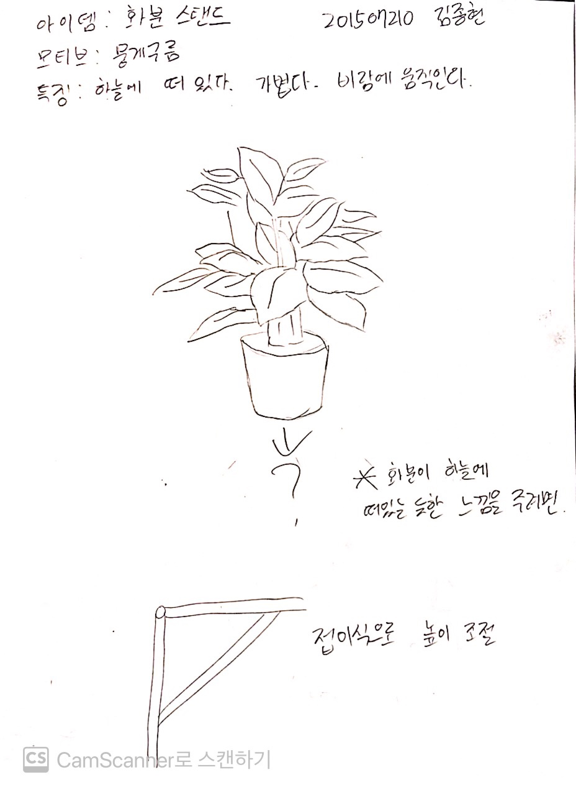
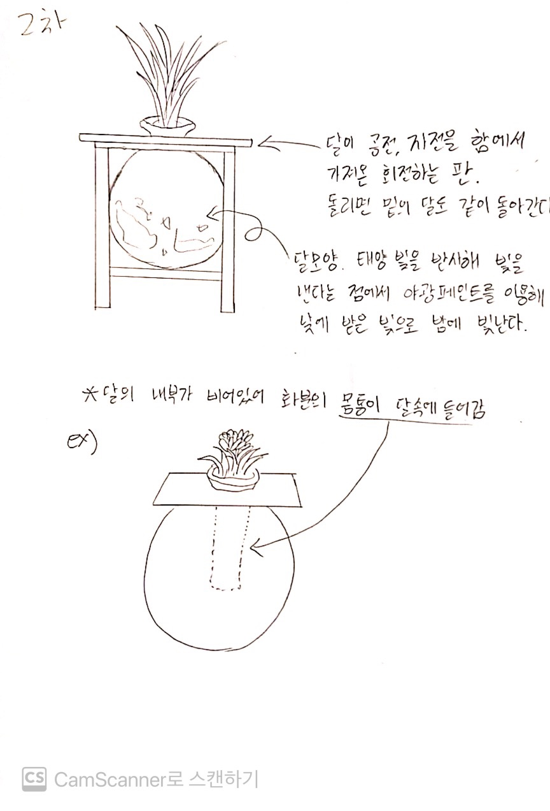
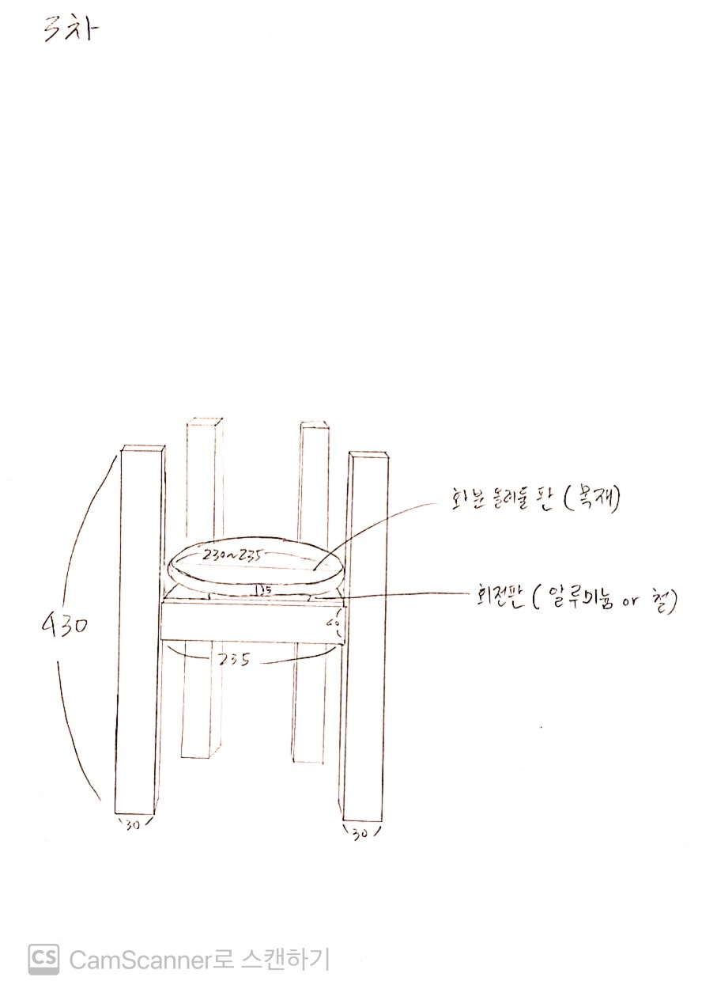
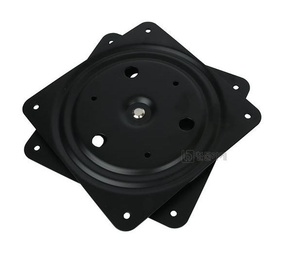

Flowerpot Stand
- Concept
- Relaxed
- Motive
- Full Moon
- Storytelling
I was preparing for a Muay Thai match.
I worked hard every day until the gym closed, working hard with other players to win the match.
After the match, I rested and had a recovery period, and I just lay on the sofa.
I was just lying on the sofa,
but it felt really cozy and relaxed.
I couldn't be more comfortable
because it was a rest when I was very tired.
- IdeaSketch1
-
In the first sketch, we set the motif as a cloud.
And I thought about how to give the feeling of a flowerpot floating in the sky.


- IdeaSketch2
-
In the second sketch, the motif was changed to the moon.
I thought it would be good to make a rotating plate using the moon's revolution and rotation,
and to paint the wooden poles with luminous paint by taking advantage of the fact that the moon reflects the sun's light and emits light.
- IdeaSketch3


In the 3rd sketch, we sketched out the plant
stand that we were going to make in detail.
It was conceived so that plants could be
placed on a rotating plate from the original furniture.
I would like to try the planter board with wood.
The planter plate will use a bearing as a device
that allows it to rotate.
